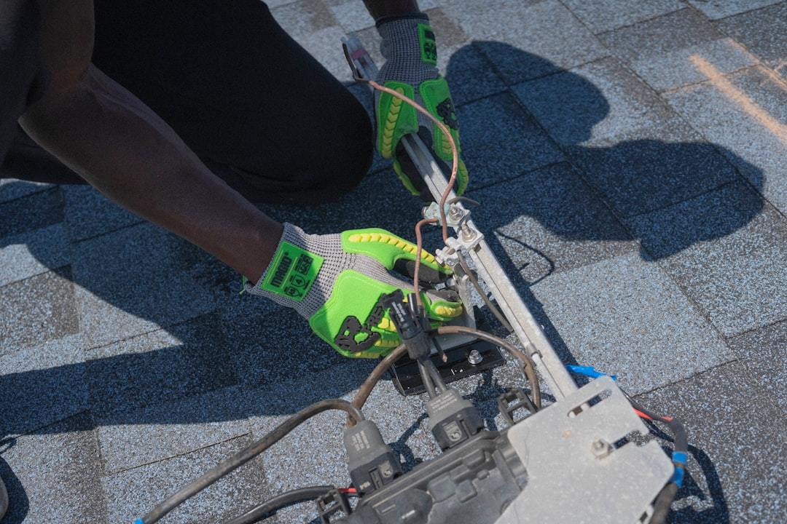

A useful Tampa roof decision starts with 4 checks: verify the Florida contracting business through DBPR, compare the written scope line by line, confirm permit responsibility, and ask for the observed findings behind any repair or replacement recommendation. The source page separates 7 roofing topics, including repair, replacement, inspection, storm damage, asphalt shingles, metal roofing and tile roofing, so the practical task is matching the visible roof issue to the right written scope.
For homeowners comparing roof repair tampa options, the practical question is what the roof is doing, what has actually been observed, and whether a repair, inspection or replacement scope fits the property.
Roof Repair Tampa Explained
Roof Contractor Tampa frames the first step as a condition question, not a product choice. A ceiling mark, displaced shingle or ageing roof is only the surface clue. The useful starting note is the property location, the visible symptom, whether water is entering, when the issue began, and any access limits or nearby structures that could affect inspection.
The published guidance is careful about remote diagnosis. It says the contracting business still has to confirm the condition and written scope. That matters for Tampa owners because a repair discussion should follow the likely water path through the roof covering, flashing, valleys and penetrations before anyone treats a single mark as the whole problem. A related Tampa roof repair guide also keeps the focus on comparing the decision, not naming a result too early.
Repair, replacement or inspection
The repair path suits a defined defect when the likely water path and repair area can be described. The replacement path needs a broader assembly view, including tear-off, deck allowances, underlayment, ventilation, flashing, permits, cleanup and warranties. An inspection is different again: its value is a record of what can be observed, what remains hidden, and why the next decision is being recommended.
When the decision is not obvious, ask for both viable scopes in writing. The source page says the answer depends on where the damage is, how widespread it is, the roof covering, and the condition of the deck, flashing and underlayment. That is a stronger comparison than asking for a single headline recommendation because it shows which facts would change the answer.
- Ask what was observed from safe access points.
- Ask what could not be confirmed without further work.
- Ask whether the written estimate is for repair only, replacement only, or investigation first.
- Ask which exclusions could change the final scope.
What a written roofing estimate should separate
A written roofing estimate is easier to compare when it separates materials from labour, layers from visible finishes, and cleanup from installation. The source page specifically names materials, layers, deck allowance, flashing, ventilation, cleanup and exclusions as items to review line by line. For an asphalt shingle roof, metal roofing or tile roofing, the roof covering is only one part of the assembly.
Tile appearance, for example, does not show the condition of the water-shedding layers below. A metal quote should name the system, fasteners, penetrations, edges and warranty conditions. A shingle comparison should look beyond colour or a headline warranty and check the complete assembly. The same principle applies to storm damage: condition evidence and a roofing scope should stay separate from insurance decisions.
Permit and contractor checks in Tampa
The source guidance tells readers to verify the contracting business through Florida DBPR before signing. That is a practical identity and scope check, not a substitute for reading the estimate. It also says permit responsibility should be confirmed in writing because the property jurisdiction and work scope determine the permit and inspection route.
For Tampa and Hillsborough County properties, the useful question is not just whether a permit exists in the abstract. Ask who is responsible for permit handling, which jurisdiction applies to the property, and how required inspections will be scheduled and documented. Historic district or HOA checks can also belong in the early question list where the property has those constraints, because exterior materials, access and approval sequencing may affect the work conversation.
Who this applies to
This guide applies to owners or managers who have a visible roof symptom, are comparing repair with replacement, or need a clearer inspection record before committing. It is also relevant when a storm event has left visible condition questions, provided safety and water entry are handled first and the roofing scope is kept separate from any insurance process.
It is less useful for someone who only wants a remote price or a guaranteed timeframe. The source page says submitting an enquiry does not confirm availability, timing, price, inspection or acceptance of the work. The better use of an enquiry is to give enough roof and property detail for a provider to decide whether the job can be assessed and what information is still missing.
- Record the symptom. Note the visible issue, when it began, whether water is entering, and the roof covering if known.
- Verify the contractor. Check the contracting business and licence scope through Florida DBPR before signing.
- Request written findings. Ask what was observed and why repair, replacement or further investigation is being recommended.
- Compare line by line. Review materials, layers, deck allowance, flashing, ventilation, cleanup, permits and exclusions on the same basis.
| Decision path | Best used when | What to ask for |
|---|---|---|
| Repair | A visible defect or likely water path can be defined | Repair area, exclusions, flashing or penetration details, and what remains unconfirmed |
| Inspection | The condition is unclear or hidden layers may affect the next decision | Observed findings, limits of access, likely water path and recommended next step |
| Replacement | The scope may involve the full roof assembly | Tear-off, deck allowance, underlayment, ventilation, flashing, permits, cleanup and warranty terms |
Common questions
Should a Tampa roof be repaired or replaced? The source guidance says the answer depends on the damage location, how widespread it is, the roof covering, and the condition of the deck, flashing and underlayment. When the answer is not obvious, ask for the findings and both viable scopes in writing.
What details should be sent with a roofing enquiry? Include the property location, roof covering if known, approximate age, visible symptoms, when the issue began, previous repairs and whether water is entering. Access limits and nearby structures can also affect the conversation.
Does replacement need a permit in Tampa? The source page says permit responsibility should be confirmed in writing because the property jurisdiction and work scope determine the permit and inspection route. Ask who handles the permit and how inspections will be documented.
How should storm damage be discussed with a roofer? The published guidance separates safety and water entry from condition evidence and keeps the roofing scope separate from insurance decisions. Ask for observed findings and a written scope rather than a sales-only conclusion.
This guide covers practical scope, permit, inspection and estimate questions for Tampa roof repair and replacement decisions.